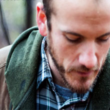

past performanceExtant Arts Company presents Blue Surge Written by Rebecca Gilman |
Join Extant Arts as they open their 2010 season with the romantic tragedy Blue Surge by the acclaimed contemporary playwright, Rebecca Gilman. Blue Surge confronts the American taboo of class through the experiences of a a small-town cop who struggles to "save" a young hooker. Extant Arts is excited to work with director and documentarian Kat Vecchio on Blue Surge. "Kat brings a keen and sensitive eye to Gilman's richly-drawn characters," says Artistic Director Greg Taubman. "She has real knack for finding the vibrancy and subtle drama of unexpected moments." Vecchio has worked at Nerve Ensemble for Phenomenon, New York Musical Theater Festival, and the Public's Summer Play Festival. She has recently directed for The Looking Glass Theatre's Writer / Director Forum and The Theatre Rats Annual Chester Horn Short Play Festival where audiences voted her Best Director. "Blue Surge touches on something both universal and at the same time quintessentially American," says Vecchio, an Oklahoma native. "It explores how people react to the opportunities (or lack thereof) that are presented to them and how money (or the fear of having none) drives their decisions. We're told to believe that there are two Americas, but Gilman's heartbreaking portrayal of the challenges faced by folks in small-town Wisconsin is a powerful statement the 'lives of quiet desperation' lived by many Americans, both in the heartland and on the coasts." For more information, please visit Extant Arts Company: www.extantarts.org |
showtimes:January 21 through February 7 Wed, Thur, Fri, Sat @ 8PM; tickets:Ticket sales is closed. cast & crew
Featuring Pete Caslavka, Lauren Nordvig, Justin Gallo, Bridget Durkin and Louise Flory. |
upcoming performances |
|||
 |
|||
| EVQ Film Festival 2018 August 20-25 |
|||
performance archives |
|||
| 2018 | 2017 | 2016 | 2015 |
| 2014 | 2013 | 2012 | 2011 |
| 2010 | 2009 | 2008 | 2007 |